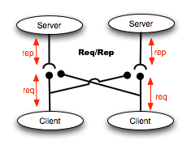
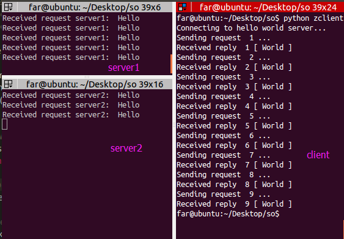
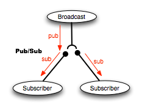
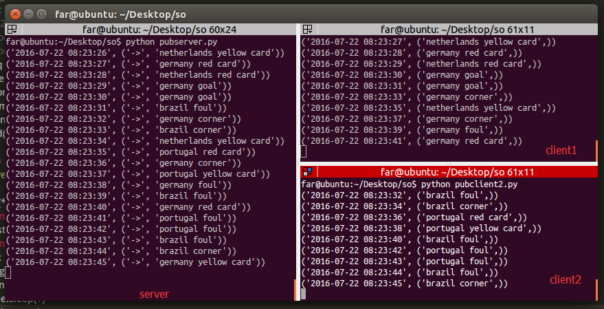
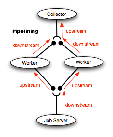
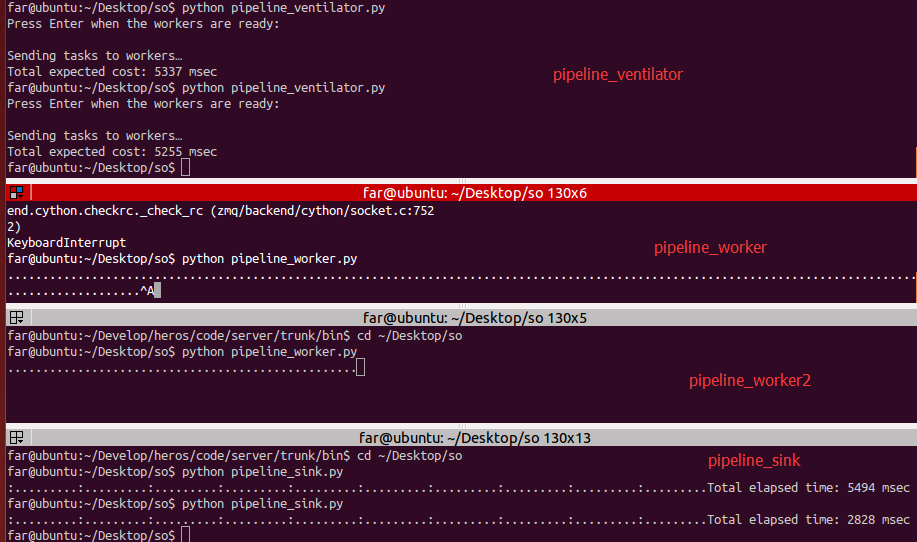
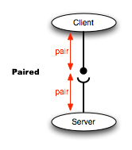

消息队列¶
zeromq¶
zeromq是一个为可伸缩的分布式或并发应用程序设计的高性能异步消息库。它提供一个消息队列, 但是与面向消息的中间件不同，ZeroMQ的运行不需要专门的消息代理（message broker）。该库设计成常见的套接字风格的API
- 支持高并发的异步 Socket 框架
- 协议比 TCP 更快、适用于大型集群和分布式计算
- 提供多种消息传递机制，如 inproc/IPC/TCP/multicast 等
- 内置丰富的组合模式，可用于简化大型分步式计算架构
- 提供异步 I/O 模式，适用于可扩展的多核应用开发
- 拥有活跃的开发者社区提供技术支持，发展相当迅速
- 支持超过 30 种的编程语言，如 C/C++/Java/.NET/Python/PHP 等
- 良好的跨平台性，支持多种 OS，如 Linux/Windows/OS X 等
- 拥有 iMatix 公司的商业级别支持，却是完全免费的
http://zeromq.org/intro:get-the-software
编译zeromq¶
git clone https://github.com/zeromq/libzmq
./autogen.sh && ./configure && make -j 4
make check && make install && sudo ldconfig
#autogen需要libtool
apt-get install libtoolpyzmq安装¶
pip install pyzmq检测安装
import zmq
print (" version is %s"%zmq.zmq_version())协议支持¶
INPROCan In-Process communication modelIPCan Inter-Process communication modelMULTICASTmulticast via PGM, possibly encapsulated in UDPTCPa network based transport
建立基础¶
由于在网络中两个端点是相对动态的，很难有一个稳定的单一连接点。 如果是这种情况，可以使用由0MQ提供的转发设备。 转发设备可以绑定2个不同端口，并且转发消息从一个端点到另一个端点。 这样做的话，在网络中转发设备能够变成一个稳定的点，其它组件都可以去连接。
0MQ提供了3种类型的设备
QUEUE, a forwarder for the request/response messaging patternFORWARDER, a forwarder for the publish/subscribe messaging patternSTREAMER, a forwarder for the pipelined messaging pattern
多路复用模式¶
- select（支持unix/windows）
- poll（支持unix）
- epoll（支持linux）
- kqueue（支持freebsd）
- devpoll（zmq自研的poll）
其中,Linux 下默认使用的是
epoll方式
通讯模式¶
REQUEST/REPLY, bidirectional, load balanced and state basedPUBLISH/SUBSCRIBE, publish to multiple recipients at onceUPSTREAM / DOWNSTREAM, distribute data to nodes arranged in a pipelinePAIR, communication exclusively between peers
应答模式(REQUEST/REPLY)¶
由请求端发起请求，并等待回应端回应请求
普通应答模式

server.py
import zmq
import time
context = zmq.Context()
socket = context.socket(zmq.REP)
socket.bind("tcp://*:5555")
while True:
# Wait for next request from client
message = socket.recv()
print "Received request: ", message
# Do some 'work'
time.sleep (1) # Do some 'work'
# Send reply back to client
socket.send("World")client.py:
import zmq
context = zmq.Context()
# Socket to talk to server
print "Connecting to hello world server..."
socket = context.socket(zmq.REQ)
socket.connect ("tcp://localhost:5555")
# Do 10 requests, waiting each time for a response
for request in range (1,10):
print "Sending request ", request,"..."
socket.send ("Hello")
# Get the reply.
message = socket.recv()
print "Received reply ", request, "[", message, "]"负载均衡

client的请求会被均衡的分配给多个server中
server1.py
import zmq
import time
context = zmq.Context()
socket = context.socket(zmq.REP)
socket.bind("tcp://*:5555")
while True:
# Wait for next request from client
message = socket.recv()
print "Received request server1: ", message
# Do some 'work'
time.sleep (1) # Do some 'work'
# Send reply back to client
socket.send("World")server2.py
import zmq
import time
context = zmq.Context()
socket = context.socket(zmq.REP)
socket.bind("tcp://*:5556")
while True:
# Wait for next request from client
message = socket.recv()
print "Received request server2: ", message
# Do some 'work'
time.sleep (1) # Do some 'work'
# Send reply back to client
socket.send("World")client.py:
import zmq
context = zmq.Context()
# Socket to talk to server
print "Connecting to hello world server..."
socket = context.socket(zmq.REQ)
socket.connect ("tcp://localhost:5555")
socket.connect ("tcp://localhost:5556")
# Do 10 requests, waiting each time for a response
for request in range (1,10):
print "Sending request ", request,"..."
socket.send ("Hello")
# Get the reply.
message = socket.recv()
print "Received reply ", request, "[", message, "]"
发布订阅模型(PUBLISH/SUBSCRIBE)¶
发布订阅模型,有一个发布消息的服务端,有若干接收端,接收端只关注感兴趣的事件.在编程模型中早被大量应用,如消息推送等,在发布/订阅模式中的组件是松散耦合的,发布端不需要关心订阅端,就像一个广播电台一样,接收端就像收音机.所以发布端发布过的消息如果在订阅之前是没办法获取的. 
pubserver.py:
import zmq
import time
from random import choice
context = zmq.Context()
socket = context.socket(zmq.PUB)
socket.bind("tcp://127.0.0.1:5000")
countries = ['netherlands','brazil','germany','portugal']
events = ['yellow card', 'red card', 'goal', 'corner', 'foul']
def print_t(*args):
from time import gmtime, strftime
t= strftime("%Y-%m-%d %H:%M:%S", gmtime())
print(t,args)
while True:
msg = choice( countries ) +" "+ choice( events )
print_t ("->",msg )
time.sleep(1)
socket.send( msg )pubclient.py:
import zmq
context = zmq.Context()
socket = context.socket(zmq.SUB)
socket.connect("tcp://127.0.0.1:5000")
socket.setsockopt(zmq.SUBSCRIBE, "netherlands")
socket.setsockopt(zmq.SUBSCRIBE, "germany")
def print_t(*args):
from time import gmtime, strftime
t= strftime("%Y-%m-%d %H:%M:%S", gmtime())
print(t,args)
while True:
print_t( socket.recv())pubclient2.py:
import zmq
context = zmq.Context()
socket = context.socket(zmq.SUB)
socket.connect("tcp://127.0.0.1:5000")
socket.setsockopt(zmq.SUBSCRIBE, "brazil")
socket.setsockopt(zmq.SUBSCRIBE, "portugal")
def print_t(*args):
from time import gmtime, strftime
t= strftime("%Y-%m-%d %H:%M:%S", gmtime())
print(t,args)
while True:
print_t( socket.recv())
管道模型¶

管道模型和应答模式很类似,不同的是服务端并不直接把信息回馈给请求者.
pipeline_ventilator.py
import zmq
import random
import time
try:
raw_input
except NameError:
# Python 3
raw_input = input
context = zmq.Context()
# Socket to send messages on
sender = context.socket(zmq.PUSH)
sender.bind("tcp://*:5557")
# Socket with direct access to the sink: used to syncronize start of batch
sink = context.socket(zmq.PUSH)
sink.connect("tcp://localhost:5558")
print("Press Enter when the workers are ready: ")
_ = raw_input()
print("Sending tasks to workers…")
# The first message is "0" and signals start of batch
sink.send(b'0')
# Initialize random number generator
random.seed()
# Send 100 tasks
total_msec = 0
for task_nbr in range(100):
# Random workload from 1 to 100 msecs
workload = random.randint(1, 100)
total_msec += workload
sender.send_string(u'%i' % workload)
print("Total expected cost: %s msec" % total_msec)
# Give 0MQ time to deliver
time.sleep(1)pipeline_worker.py
import sys
import time
import zmq
context = zmq.Context()
# Socket to receive messages on
receiver = context.socket(zmq.PULL)
receiver.connect("tcp://localhost:5557")
# Socket to send messages to
sender = context.socket(zmq.PUSH)
sender.connect("tcp://localhost:5558")
# Process tasks forever
while True:
s = receiver.recv()
# Simple progress indicator for the viewer
sys.stdout.write('.')
sys.stdout.flush()
# Do the work
time.sleep(int(s)*0.001)
# Send results to sink
sender.send(b'')pipeline_sink.py
import sys
import time
import zmq
context = zmq.Context()
# Socket to receive messages on
receiver = context.socket(zmq.PULL)
receiver.bind("tcp://*:5558")
# Wait for start of batch
s = receiver.recv()
# Start our clock now
tstart = time.time()
# Process 100 confirmations
for task_nbr in range(100):
s = receiver.recv()
if task_nbr % 10 == 0:
sys.stdout.write(':')
else:
sys.stdout.write('.')
sys.stdout.flush()
# Calculate and report duration of batch
tend = time.time()
print("Total elapsed time: %d msec" % ((tend-tstart)*1000))启动pipeline_sink--->pipeline_ventilator--->pipeline_worker,启动多个work消耗时间明显比单work要小

PAIR模型¶
PAIR模式其实也就是传统的socket连接方式，客户端与服务器端通过点对点的进行通讯,通讯是双向的,无状态,客户端通过服务端监听的端口与之通讯.

pair_server.py
import zmq
context = zmq.Context()
socket = context.socket(zmq.PAIR)
socket.bind("tcp://127.0.0.1:5555")pair_client.py
context = zmq.Context()
socket = context.socket(zmq.PAIR)
socket.connect("tcp://127.0.0.1:5555")http://nichol.as/zeromq-an-introduction http://zguide.zeromq.org/page:all http://iyuan.iteye.com/blog/982185